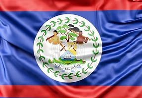

Bandera
La bandera de Belice incluye el escudo del país rodeado por una guirnalda de hojas, con franjas rojas en los bordes superior e inferior.
La bandera de Belice incluye el escudo del país rodeado por una guirnalda de hojas, con franjas rojas en los bordes superior e inferior.
El escudo de Belice muestra herramientas de trabajo y un árbol de caoba, que representan la industria forestal del país.
Belice se independizó del Reino Unido en 1981 y es conocido por su biodiversidad y su Gran Barrera de Coral.
Belice tiene una extensión territorial de aproximadamente 22,966 km².
El Gran Agujero Azul es un sumidero submarino popular para el buceo y el esnórquel.
Caracol es un sitio arqueológico maya ubicado en la selva de Belice.
Los cayos de Belice son islas pequeñas con playas de arena blanca y arrecifes de coral.